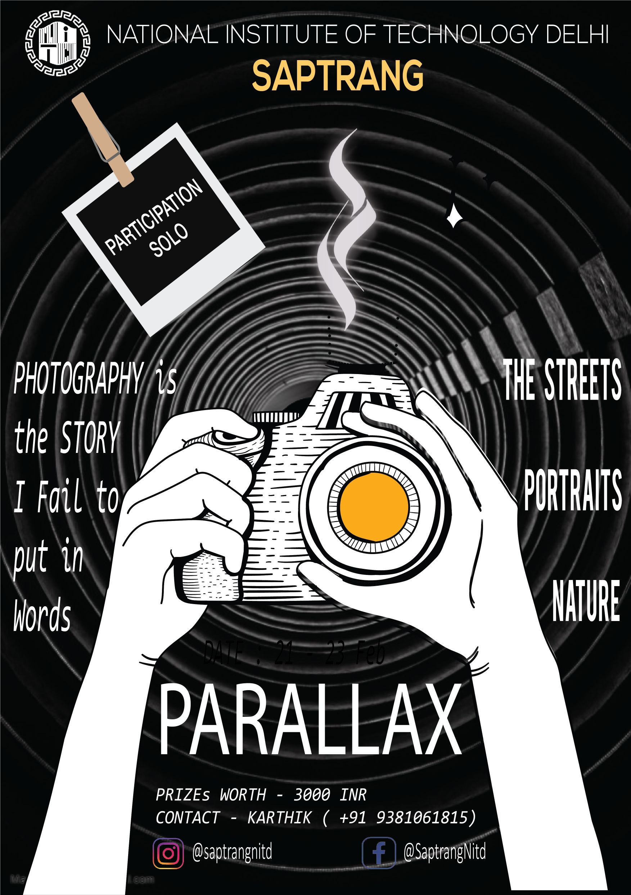

FEB
22-23
Parallax
"Photography is the story I fail to put into words." Saptrang'20 in association with Clairvoyance, Photography Club of NIT Delhi presents you with Parallax, an event that encourages creativity and talents across the country. We welcome and call out all the photographers that can blend divergent thinking in their photography. Based on a theme provided, each participant will have to send in a picture clicked by them. With a chance to have winning photos displayed amidst a huge crowd and many exciting prizes, this is definitely an event to look out for.